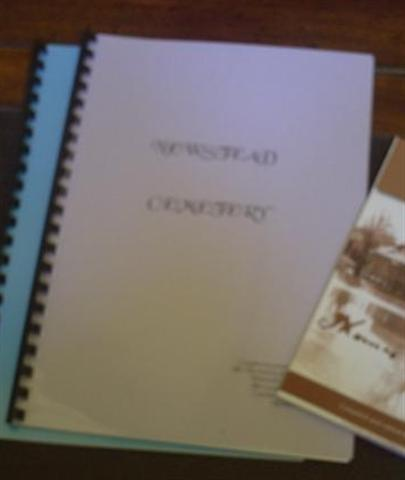
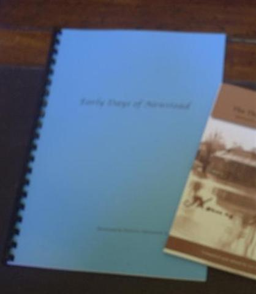

|
|
Booklets that are available from the society "NEWSTEAD CEMETERY"
 This 29 page A4 booklet contains a history of the cemetery, copies of plans, list of residents and write ups for the more prominent headstones.AU$10.00 each plus postage. (Currently out of print)
* * * * "EARLY DAYS OF NEWSTEAD"
 This 24 page A4 booklet is a collection of articles extracted from "The Echo" and "Castlemaine Leader" between 1874 - 1910.AU$15.00 each plus postage.
* * * * "THE THOMAS MARTIN LETTER": Memories of Strangways and Newstead
Compiled and edited by Liz Coady Published 2010 by Newstead and District Historical Society, ISBN: 978-0-9775280-1-1. AU$15.00 each plus postage * * * *
"Newstead Mechanics' Institute": It's Role in the life of a Central Victorian Community.
By Adrian R Haas Published 2006 by Newstead and District Historical Society, ISBN: 0-9775280-0-6. AU$15.00 each plus postage * * * *
"THE NEWSTEAD DISTRICT MURDERS 1857-1859"
By Adrian R Haas Published 2012 by Newstead and District Historical Society, ISBN: 978-0-949398-75-8. AU$25.00 each plus postage * * * * To order any of these publications please contact Newstead Historical Society or by printing and posting one of these forms; Booklets.doc or Booklets.pdf |
|
©2004-2025 Newstead & District Historical Society Web Design: Brian Dieckmann Page last updated: 13 Mar 2026 |
 An
88 page A5 soft cover book with map & index. Containing a copy of a 20 page hand
written letter by Thomas Martin in 1936 about his life and memories of
Strangeways & Newstead from 1858.
An
88 page A5 soft cover book with map & index. Containing a copy of a 20 page hand
written letter by Thomas Martin in 1936 about his life and memories of
Strangeways & Newstead from 1858.
 An A4 size 88 page softcover book. After describing Newstead as it was in the
1850s Adrian went on to detail 4 murders that lead to a police presence in the
town. Adrian died before publication could be achieved, however his son Damien
has brought this project to completion.
An A4 size 88 page softcover book. After describing Newstead as it was in the
1850s Adrian went on to detail 4 murders that lead to a police presence in the
town. Adrian died before publication could be achieved, however his son Damien
has brought this project to completion.